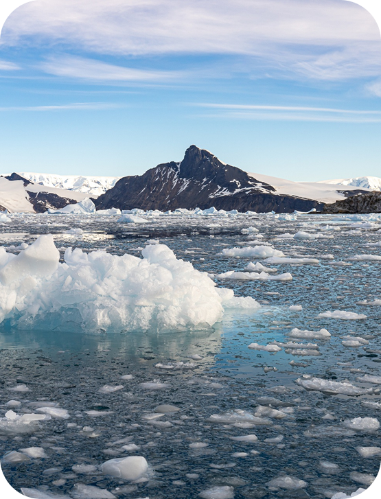
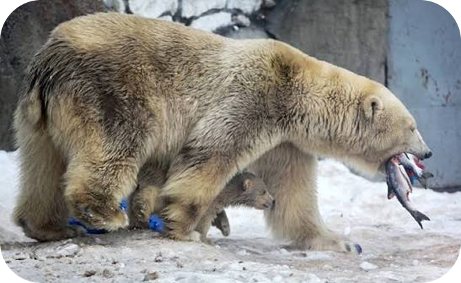
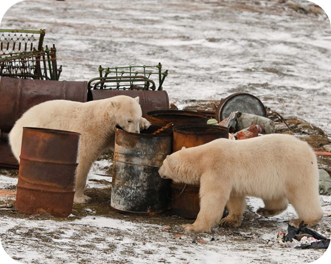
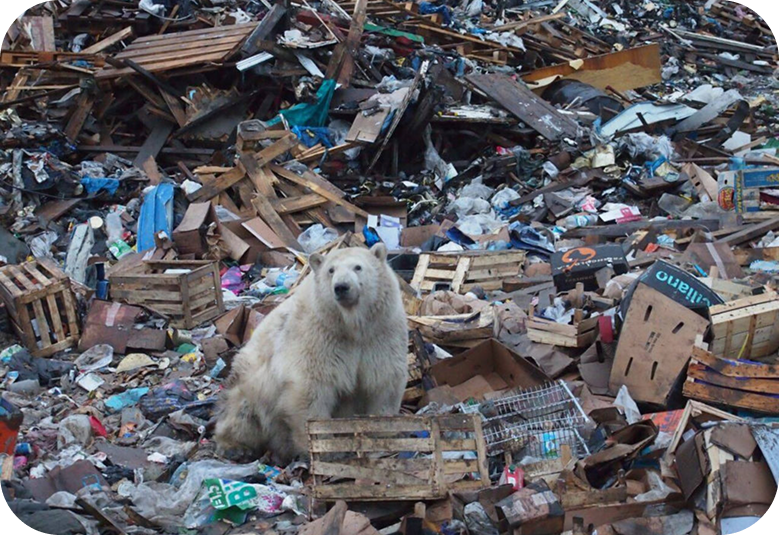
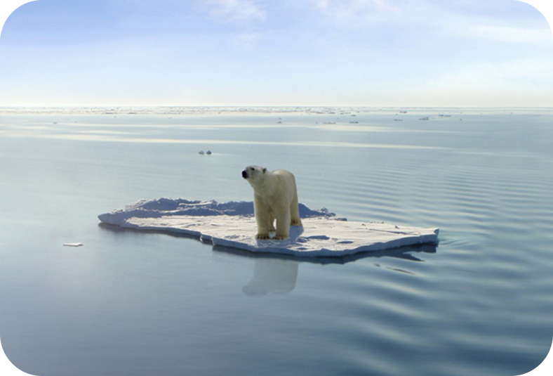

Угрозы
Потеря морского льда
Это не просто изменение пейзажа — это системный коллапс всей арктической экосистемы, в центре которой находится белый медведь.
Морской лёд для белого медведя — не просто территория или временная платформа. Это фундаментальное условие выживания, сложившееся за тысячи лет эволюции. На льду происходят все ключевые события их жизни: охота, миграция, размножение, воспитание потомства. Однако сегодня этот фундамент стремительно разрушается под воздействием климатических изменений, и последствия этого процесса уже носят необратимый характер для многих популяций.
Согласно климатическим моделям, при сохранении текущих выбросов парниковых газов, к середине XXI века летний морской лёд в Арктике может полностью исчезать на один или несколько месяцев в году. Для белых медведей это означает потерю жизненного пространства в критически важный сезон, что поставит большую часть популяции на грань выживания в пределах нескольких десятилетий.


Снижение доступности
добычи
Голодная Арктика: когда охота становится невозможной
Даже если лёд ещё есть — это не значит, что на нём можно прокормиться. Белые медведи охотятся преимущественно на кольчатых нерп и морских зайцев, которые также зависят от льда. Но из-за изменения климата меняется и поведение тюленей: они уходят в менее доступные зоны, ныряют глубже, реже выходят на поверхность.
Загрязнение Арктики
Невидимая угроза: токсины, которые не видны, но убивают.
Арктика кажется чистой и нетронутой, но это иллюзия. Благодаря океаническим течениям и атмосферным потокам сюда попадают загрязнители со всего мира: микропластик, тяжёлые металлы, стойкие органические загрязнители (СОЗ). Как это влияет на медведей? Токсины накапливаются в организме тюленей, а через них — в медведях. Уровень загрязняющих веществ у белых медведей сегодня — один из самых высоких среди всех млекопитающих. Это приводит к нарушениям иммунитета, репродуктивной системы, развития детёнышей. Медвежата, получающие токсины с молоком матери.
Загрязнение — это тихий, невидимый, но смертельно опасный враг, который подтачивает здоровье популяции изнутри.


Прямое воздействие
человека
Когда белый медведь и человек встречаются лицом к лицу — это почти всегда трагедия для животного. Помимо глобальных климатических изменений, белые медведи сталкиваются с прямыми и часто смертельными угрозами со стороны человека. По мере таяния льдов и расширения человеческой деятельности в Арктике, эти конфликты становятся всё более частыми и драматичными.
Синергетический
эффект
Смертельная математика: когда угрозы не складываются, а умножаются.
Самая большая опасность для белых медведей заключается не в том, что на них воздействует несколько угроз одновременно. Ключевая проблема — это синергетический эффект, когда отдельные факторы риска усиливают действие друг друга, приводя к катастрофическим последствиям, значительно превосходящим простую сумму этих угроз.
